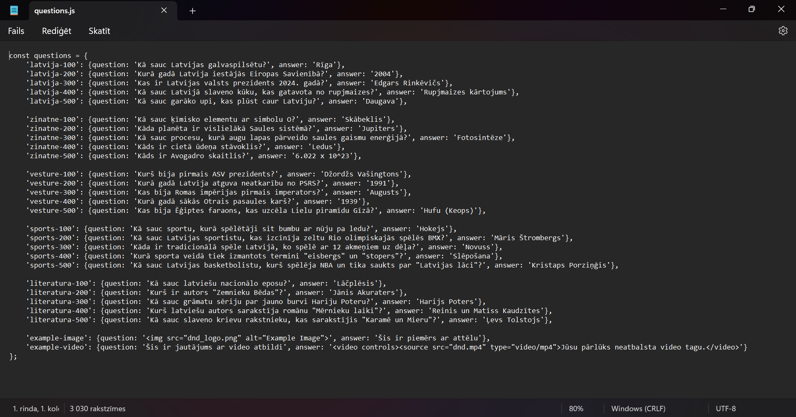

index.html
Ja ir nepieciešams rediģējat sadaļu virsrakstus.

Viktorīnai ir līdzība ar jeopardy spēli un lietotājs var izveidot pats savu spēli un šī ir pamācība kā to izdarīt.
Lejupielādē zip failu no saites https://github.com/ITspecialitate/jeopardy/archive/refs/heads/main.zip
 Šeit Jūs varat rediģēt savus jautājumus.
id'example-image': {question: '<img src="dnd_logo.png" alt="Example Image">', answer: 'Šis ir piemērs ar attēlu'} un nomainiet dnd_logo.png ar savu attēla adresi, ja vēlaties varat nomainīt attēla nosaukumu, kas atrodas elementa alt dubultpēdiņās. Ir nepieciešams aizstāt arī example-image.'example-video': {question: 'Šis ir jautājums ar video atbildi', answer: '<video controls><source src="dnd.mp4" type="video/mp4">Jūsu pārlūks neatbalsta video tagu.</video>'} aizstājiet dnd.mp4 ar sava video atrašanās vietu. Ir nepieciešams aizstāt arī example-video.Ja ir nepieciešams rediģējat sadaļu virsrakstus.
id t. i.